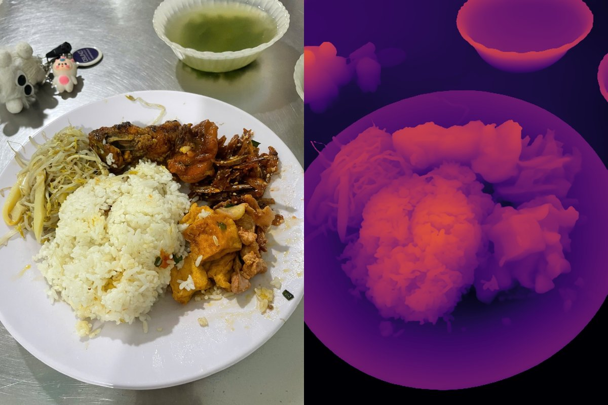

Tóm tắt—Báo cáo trình bày giao thức đánh giá và kết quả tinh chỉnh YOLO26s-seg cho bài toán phân đoạn món ăn trên khay cơm căng tin Việt Nam ([[n_cls]] lớp, [[n_img]] ảnh), kèm bước ước lượng khối lượng (gram) từ mask. Tập test được khóa từ đầu và chia theo nhóm buổi chụp để tránh rò rỉ; mỗi cấu hình được huấn luyện với 3 seed. Model cuối đạt mask mAP50-95 [[full]] trên test và nhận đúng [[conf_ok]]/[[conf_n]] vùng nhãn. Về khối lượng, chuẩn hóa diện tích theo đĩa (YOLOE) giảm MAE các món khác cơm từ [[nr0|.1f]] g xuống [[nr1|.1f]] g; với cơm, thể tích tương đối từ Depth-Anything-V2 có tương quan dương với gram (Spearman +[[spV|.2f]]) trong khi diện tích tương quan âm, giảm MAE tổng khay trên test từ [[k1|.0f]] g xuống [[k2|.0f]] g.
Từ khóa—phân đoạn thực thể, nhận diện món ăn, ước lượng khối lượng, ước lượng độ sâu đơn ảnh, YOLO.
Mục tiêu của nhóm là tinh chỉnh mô hình có sẵn và đánh giá nghiêm ngặt trên dữ liệu tự thu thập, không đề xuất kiến trúc mới. Các bộ dữ liệu khay ăn công khai như UNIMIB2016 [4] không có khối lượng từng món; Nutrition5k [5] có khối lượng nhưng ở mức cả đĩa và dùng camera độ sâu. Bộ dữ liệu của nhóm có cân từng món trên khay và chỉ dùng ảnh điện thoại. Báo cáo tập trung vào cách xây benchmark sao cho con số đáng tin, rồi mới đến kết quả.
Ảnh chụp khay cơm tại căng tin, gán nhãn đa giác theo món. Một khay được chụp khoảng 3 góc; [[n_pairs]] cặp (ảnh, món) có khối lượng cân thực tế, thuộc [[n_trays]] khay khác nhau. Gram cơm được suy ra bằng phép trừ (cả đĩa − đĩa rỗng − các món khác) nên chứa nhiễu. Sau khi rà lỗi (v3 → v4), hai cặp lớp trùng nghĩa được gộp và nhãn “gà rán” ở 6 ảnh được sửa thành “gà chua ngọt”.
Chia theo nhóm buổi chụp, không theo từng ảnh: nếu ba góc của cùng một khay rơi vào cả train và test, mô hình được đánh giá trên khay nó đã thấy. Tập test ([[te_trays]] khay có cân) được khóa từ đầu, chỉ gồm lớp đã có trong train; ảnh tải từ Roboflow chỉ dùng cho train. Test không dùng để chọn cấu hình, epoch hay ngưỡng.
YOLO26s-seg (Ultralytics [1]), ảnh 640, siêu tham số cố định giữa các cấu hình. Mỗi cấu hình chạy 3 seed (0, 1, 2); báo cáo trung bình ± độ lệch chuẩn và so sánh theo cặp cùng seed. Cấu hình được chọn theo val; model cuối huấn luyện lại trên train + val đủ 150 epoch, lấy epoch cuối (không chọn theo test).
Diện tích món A = diện tích mask / diện tích đĩa; đĩa lấy từ YOLOE [3] (prompt “plate”), chọn đĩa chứa nhiều món dự đoán nhất, fit elip khi đĩa bị khung cắt. Với món khác cơm:
với b dùng chung, lớp có < 3 khay dùng hệ số chung, và hiệu chỉnh smearing của Duan [6] khi đổi về thang gram. Với cơm, Depth-Anything-V2 Large [2] cho bản đồ disparity; fit mặt phẳng bền vững (lọc MAD lặp) trên phần mặt đĩa lộ ra, độ cao h = disparity − mặt phẳng, chuẩn hóa theo độ trải p95−p5 trong vùng đĩa; thể tích tương đối V = Σ max(h, 0) / diện tích đĩa (Hình 1).

Bảng II–III tách hai bộ nhãn vì danh sách lớp khác nhau. Trên v3, augmentation xoay/lật/copy-paste tăng mask mAP từ [[base]] lên [[aug]] nhưng làm sai số diện tích cơm tệ hơn; gộp cơm (rice1) cho mAP [[rice1]] và sai số cơm thấp nhất. Model cuối (aug + rice1, train + val) đạt [[full]] mask, [[full_box]] box, sai số diện tích cơm [[full_rice]]%.
Bảng IV cho thấy món có hình dạng rõ (trứng, xúc xích, thịt chiên) đạt AP ≥ 0.85, còn các món xào/kho nhiều dạng thì yếu. Gà chua ngọt gần như thất bại vì xuất hiện với 3 kiểu trình bày mà train chỉ có một. Cá viên dao động [[fb.min()|.2f]]–[[fb.max()|.2f]] giữa các seed — một lời nhắc rằng với 10 khay test, chênh lệch một seed không đủ kết luận. Tổng cộng [[conf_ok]]/[[conf_n]] ([[conf_pct]]%) vùng nhãn được nhận đúng, [[conf_miss]] vùng bị bỏ sót.
Bảng V dùng mask do mô hình dự đoán, đúng như khi chạy ứng dụng; cả ba cách dùng chung một pipeline, cùng tập món và cách tính bỏ sót. Diện tích theo đĩa giảm MAE món khác cơm khoảng một nửa so với mốc khẩu phần trung bình ([[nr0|.1f]] → [[nr1|.1f]] g trên test), nhưng không cải thiện tổng khay vì cơm — món nặng nhất — vẫn đoán bằng trung bình. Với mask nhãn tay, MAE món đạt [[gt_upper|.1f]] g (giới hạn trên của cách 2D).
Tính theo khay ([[gn]] khay, mask nhãn tay), tương quan Spearman giữa gram cơm và diện tích là [[gA|+.2f]], với thể tích từ model Small là [[gS|+.2f]] và Large là [[gL|+.2f]]. Với mask dự đoán: diện tích [[spA|+.2f]], thể tích [[spV|+.2f]]. Diện tích tương quan âm vì cơm càng nhiều càng bị món khác đè lên. Khi đưa vào hệ thống, độ sâu không cải thiện MAE cơm từng đĩa trên CV ([[c1|.1f]] so với [[c2|.1f]] g) nhưng giảm sai số tổng khay ở cả CV ([[kc1|.0f]] → [[kc2|.0f]] g; trung vị [[kp1|.1f]]% → [[kp2|.1f]]%) và test ([[k1|.0f]] → [[k2|.0f]] g). Chỉ kết luận ở mức tổng khay — con số ứng dụng hiển thị.
Giao thức gồm chia theo nhóm buổi chụp, test khóa, 3 seed, chỉ số cơm độc lập cách gán nhãn và CV theo nhóm cho khối lượng giúp tách được cải tiến thật khỏi dao động ngẫu nhiên. Tinh chỉnh YOLO26s-seg đạt mask mAP [[full]]; diện tích chuẩn hóa theo đĩa đủ tốt cho món khác cơm, còn cơm cần thông tin 3D — độ sâu đơn ảnh là hướng khả thi không cần phần cứng thêm. Ứng dụng nên cho người dùng xác nhận các món mô hình không chắc chắn.
[1] G. Jocher, J. Qiu, and Ultralytics, “Ultralytics YOLO,” software, 2025. [Online]. Available: https://github.com/ultralytics/ultralytics
[2] L. Yang, B. Kang, Z. Huang, Z. Zhao, X. Xu, J. Feng, and H. Zhao, “Depth Anything V2,” in Advances in Neural Information Processing Systems (NeurIPS), 2024.
[3] A. Wang, L. Liu, H. Chen, Z. Lin, J. Han, and G. Ding, “YOLOE: Real-time seeing anything,” arXiv:2503.07465, 2025.
[4] G. Ciocca, P. Napoletano, and R. Schettini, “Food recognition: A new dataset, experiments, and results,” IEEE J. Biomed. Health Inform., 2017.
[5] Q. Thames et al., “Nutrition5k: Towards automatic nutritional understanding of generic food,” in Proc. IEEE/CVF Conf. Computer Vision and Pattern Recognition (CVPR), 2021.
[6] N. Duan, “Smearing estimate: A nonparametric retransformation method,” J. Amer. Statist. Assoc., 1983.